MBO 运行快照
俯视图：紫=物料源，灰=物流，绿=生产，橙=产物仓，黄=电力。
d10 · graphite
预测 1.333/s · 实测 1.359/s（+1.9%）
PASS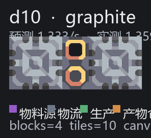
g1 · graphite
预测 1.333/s · 实测 1.367/s（+2.5%）
PASS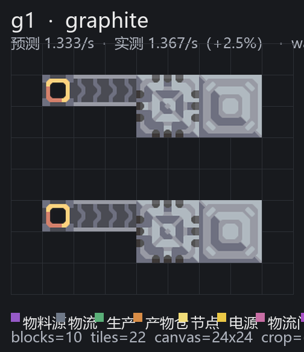
g1-split · graphite
预测 1.333/s · 实测 1.357/s（+1.8%）
PASS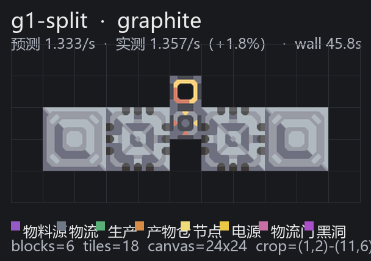
g1-split-ovf · graphite
预测 1.333/s · 实测 1.359/s（+1.9%）
PASS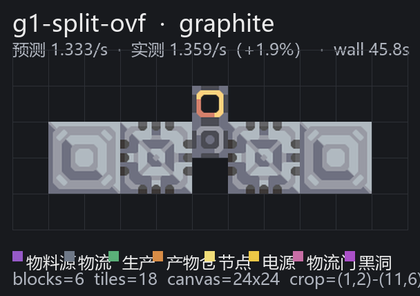
m-core · graphite
预测 1.333/s · 实测 1.359/s（+1.9%）
PASS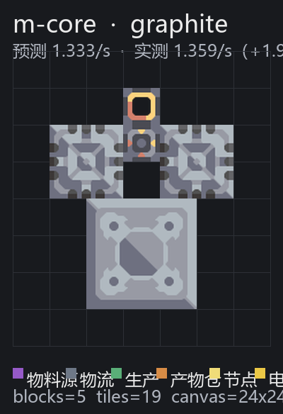
m-single · graphite
预测 1.333/s · 实测 1.319/s（-1.1%）
PASS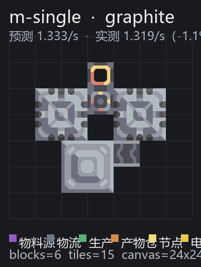
m-vault · graphite
预测 1.333/s · 实测 1.359/s（+1.9%）
PASS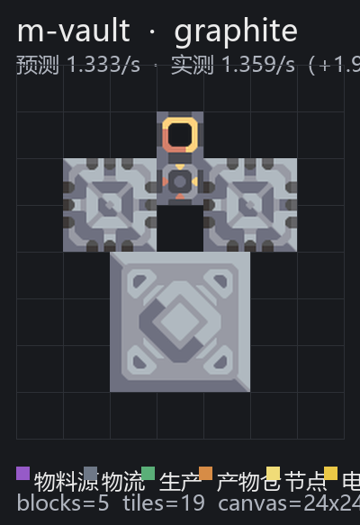
m-void · graphite
预测 1.333/s · 实测 1.359/s（+1.9%）
PASS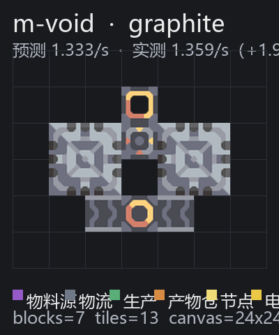
m4 · metaglass
预测 4.000/s · 实测 4.012/s（+0.3%）
PASS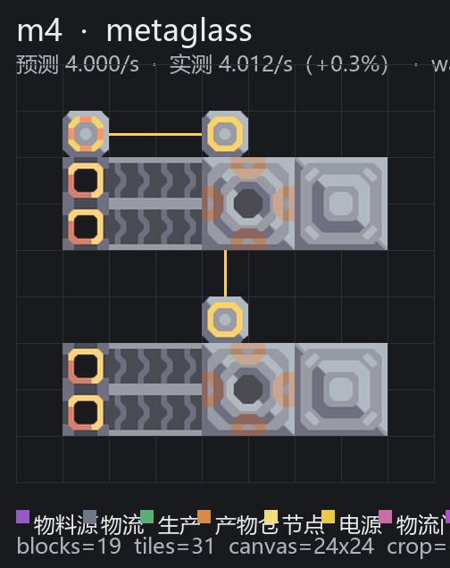
o-cluster8 · graphite
预测 1.333/s · 实测 1.354/s（+1.5%）
PASS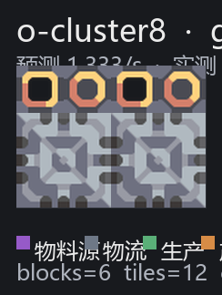
o-cluster9 · graphite
预测 1.333/s · 实测 1.287/s（-3.5%）
PASS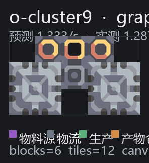
o-dual · graphite
预测 1.333/s · 实测 1.352/s（+1.4%）
PASS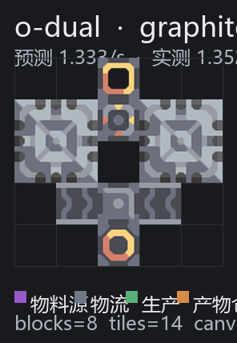
o-ports · graphite
预测 1.333/s · 实测 1.359/s（+1.9%）
PASS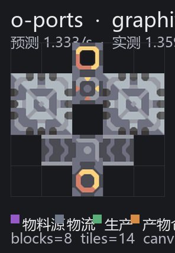
o-tiles · graphite
预测 1.333/s · 实测 1.359/s（+1.9%）
PASS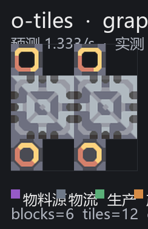
p-both · graphite
预测 1.333/s · 实测 1.282/s（-3.9%）
PASS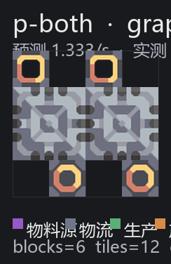
p-gate · graphite
预测 1.333/s · 实测 1.286/s（-3.5%）
PASS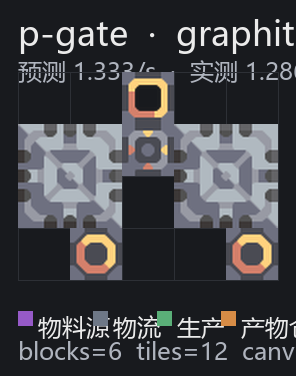
p-one · graphite
预测 1.333/s · 实测 1.359/s（+1.9%）
PASS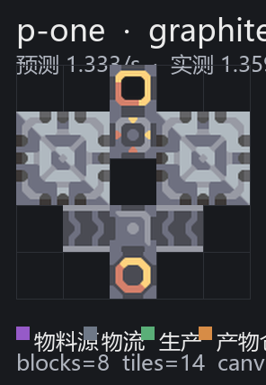
q6 · graphite
预测 2.667/s · 实测 2.703/s（+1.3%）
PASS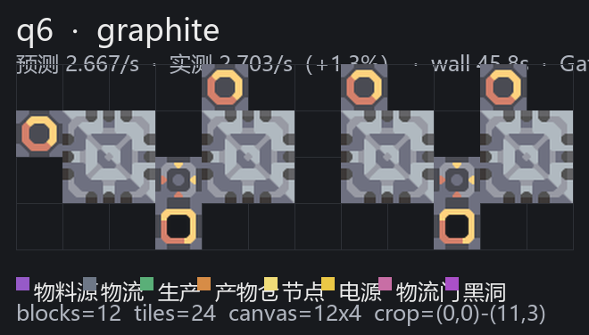
q8 · graphite
预测 2.667/s · 实测 2.708/s（+1.6%）
PASS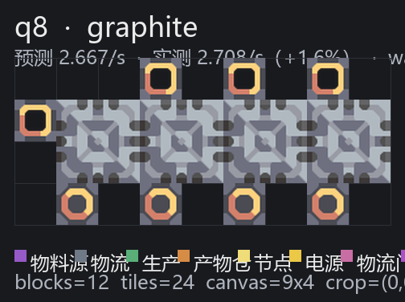
s3 · silicon
预测 3.000/s · 实测 2.958/s（-1.4%）
PASS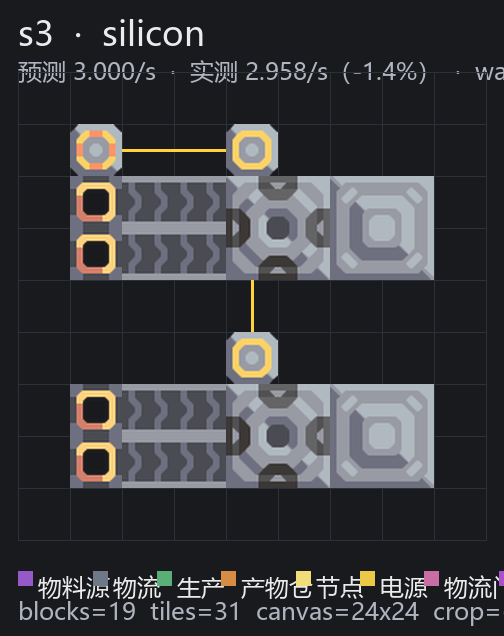